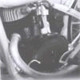
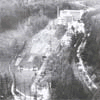
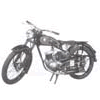
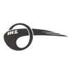
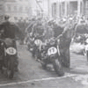

1943 |
Din cauza crizei de materiale s-a renuntat la fabricarea blocurilor de motor din aliaje usoare, s-a inceput producerea din fonta. |
 | |
1944 |
Castigul gruparii Auto Union ajunge la maximum. |
||
1945 |
Fabrica supravietuieste razboiul fara stricaciunui. Rusii pun mana pe fabrica din Zschopau, o demonteaza, iar unii din inginerii MZ sunt angajati pentru reconstructia fabricii in Uniunea Sovietica. |
 | |
1946 |
Productia motocicletelor reincepe intr-o fabrica geamana a MZ- ului, in Wilischtal, dar cu utilajele vechi pe care o au in dotare, productia este foarte greoaie. |
||
1947 |
Reintrarea in “joc” a fabricii incepe cu aparate de gospodarie, ca si la inceput. |
||
1948 |
Se naste IFA, dar reforma monetara a fost o lovitura puternica pentru tanara fabrica. Achizitionarea materialelor si sculelor nu se mai putea face in zona de vest a tarii. Data de 8 mai este o bucurie pentru cei 445 de muncitori IFA-DKW, pentru ca se relanseaza productia de motociclete. |
||
1949 |
Primul model al fabricii IFA-DKW, RT 125 se fabrica din nou, iar cu derivatia acestuia, anume modelul de sport, se intorc si in lumea curselor. |
 | |
1950 |
Sectia de productie se muta definitiv la Zschopau. |
||
1951 |
Din cauza ordonantei ministeriale dispare prescurtarea DKW din numele firmei. Productia sufera, pentru ca la acel moment in tanara RDG fabricarea motocicletelor s-a pus pe planul al doilea. |
||
1952 |
Se produce primul motor Boxer cu doi cilindrii si in doi timpi, cu transmisie cardanica, cu numele: BK 350. Fabrica se numeste MZ din acest moment. |
||
1953 |
Se infiinteaza Colectivul de Curse IFA din Zschopau. |
 | |
1954 |
Conditiile de productie se imbunatatesc. Cu ajutorul unor utilaje automate pentru producerea blocului motor, s-a produs modelul RT 125/1. Modelul sport castiga totul la 125 cmc si se naste cea mai populara cursa, numita “in jurul Zschopaului”. |
 | |
1955 |
Fabrica se modernizeaza si se reorganizeaza, se amenajeaza o incapere unde se masoara calitatea produselor. |
||